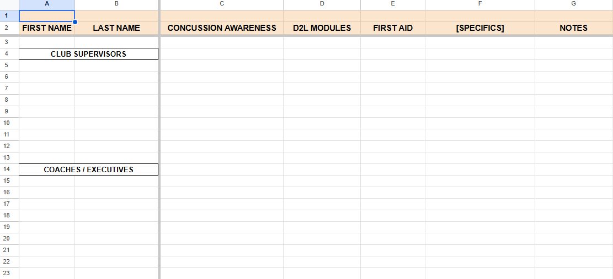

TMU Recreation Clubs
Recreational and Intramural Lead Administrator | Current
What I Do & Use
In my Recreational and Intramural Lead Administrator role, I support both recreation club and intramural operations by keeping the behind-the-scenes work organized enough for staff to move quickly. A lot of that means file documentation: organizing shared records, maintaining certification checklists, tracking equipment audits, and making sure the same kind of structure carries across both recreation clubs and intramurals.
I also brought the ATS workflow into the hiring process for the next intramural team, using it to make applicant review easier to sort through and less scattered. On top of that, I still help with website editing, including university name updates, constitution-related content, and smaller quality-of-life fixes that make program information easier to find. The role has pushed me to think about systems in a very practical way: a process only works if the people using it can trust it, understand it, and keep it updated without feeling discouraged to use it.
